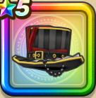

バロックヘッド
攻略班 7.0点 / 幻惑耐性+5%ジバリア属性耐性+5%ゾンビ系への耐性+5%ギラ属性ダメージ+5%
くわしい特徴
【レベル別習得スキル】 Lv1幻惑耐性+5% Lv8ジバリア属性耐性+5% Lv10さいだいMP+5 Lv15ギラ属性ダメージ+5% Lv18ゾンビ系への耐性+5% Lv20【魔法戦士】さいだいMP+5 Lv23さいだいHP+5 Lv25守備力+7 【限界突破スキル】 1凸眠り耐性+5% 2凸守備力+5 3凸こうげき魔力+5 4凸さいだいHP+5